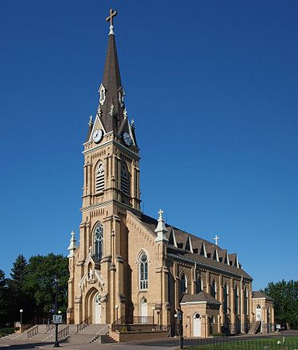
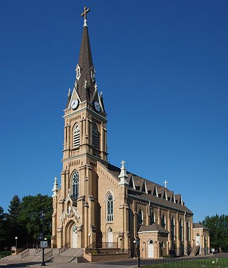

St.Michael, Minnesota
St.michael is a city in eastern Wright County, northwest of the Minneapolis-St Paul "Twin Cities" Metropolitan Area. The population was 16,399 at the 2010 census.

St.Michael, Minnesota
St.michael is a city in eastern Wright County, northwest of the Minneapolis-St Paul "Twin Cities" Metropolitan Area. The population was 16,399 at the 2010 census.
Main page
Contents
Current events
Random article
About Wikipedia
Contact us
Donate
Contribute
Help
Learn to edit
Community portal
Recent changes
Upload file
Tools
What links here
Related changes
Special pages
Permanent link
Page information
Cite this page
Wikidata item
Print/export
Download as PDF
Printable version
In other projects
Wikimedia commons
Languages
العربية
Deutsch
Español
Français
Italiano
Português
Русский
Türkçe
Tiếng Việt
Geography
According to the United States Census Bureau, the city has a total area of 36.42 square miles (94.33 km2); 32.73 square miles (84.77 km2) is land and 3.69 square miles (9.56 km2) is water.[8]
The Crow River flows along the city's eastern boundary, separating it from the city of Rogers in Hennepin County. It also borders Monticello Township, Buffalo Township, Rockford Township, and the cities of Otsego and Albertville, all in Wright County, as well as the city of Hanover, which is located within both Wright and Hennepin counties.
Infrastructure
Transportation
Interstate 94, US Highway 52, and Minnesota State Highway 241 are three of the main routes in the city.
History
A post office called St. Michael has been in operation since 1858.[9] The city took its name from St. Michael Roman Catholic Church.[10] St. Michael was incorporated in 1890.[10] The Corner Bar, a restaurant in service since 1897, was on 10 Main Street South downtown which shut down January 9, 2020 and was razed on Friday, August 14, 2020. Generational patrons drove by and many stopped to collect a brick or two to commemorate the end of this era. Oddly enough the founding father of Ditto's Bar, down the street from the Corner Bar, also left this earth days later while the name and establishment still live on in Main Street.[11] A complete history of the city, ‘’Faith, Family and Farming’’, was written by Bob Zahler.[12] The history is also tracked by the St. Michael Historical Society, whose mission is "to collect, preserve and share the history of the City of St. Michael."[13]
Education
St. Michael is part of St. Michael–Albertville Independent School District#885. The St. Michael–Albertville school colors are royal blue and gold and the mascot is the Knight. The district consists of seven schools and two alternative academies. The seven schools include St. Michael-Albertville High School (Grades 9–12), St. Michael–Albertville Middle School East (Grades 5–8), St. Michael–Albertville Middle School West (Grades 5–8), St. Michael Elementary School (Grades 1–4), Fieldstone Elementary School (Grades 1–4), Big Woods Elementary School (Grades 1–4), and Albertville Primary School (Kindergarten). The two academies are Page Academy (Middle School alternative) and the Knights' Academy (High School alternative). There is also a private Catholic school in St. Michael for grades K–8, including preschool. A new high school opened for the 2009–10 school year, and a dedication ceremony took place on September 20, 2009. The previous high school was converted into a new middle school (Middle School West). The current middle school has been renamed Middle School East.[citation needed]
Demographics
2010 census
As of the census[3] of 2010, there were 16,399 people, 5,239 households, and 4,367 families living in the city. The population density was 501.0 inhabitants per square mile (193.4/km2). There were 5,482 housing units at an average density of 167.5 per square mile (64.7/km2). The racial makeup of the city was 93.3% White, 1.9% African American, 0.2% Native American, 2.4% Asian, 0.6% from other races, and 1.6% from two or more races. Hispanic or Latino of any race were 1.9% of the population. There were 5,239 households, of which 53.0% had children under the age of 18 living with them, 73.1% were married couples living together, 6.6% had a female householder with no husband present, 3.7% had a male householder with no wife present, and 16.6% were non-families. 12.4% of all households were made up of individuals, and 3.4% had someone living alone who was 65 years of age or older. The average household size was 3.13 and the average family size was 3.43. The median age in the city was 33.4 years. 34.8% of residents were under the age of 18; 5.2% were between the ages of 18 and 24; 31.7% were from 25 to 44; 21.9% were from 45 to 64; and 6.3% were 65 years of age or older. The gender makeup of the city was 50.7% male and 49.3% female.
2010 census
As of the census[5] of 2000, there were 9,099 people, 2,926 households, and 2,437 families living in the city. The population density was 279.4 people per square mile (107.9/km2). There were 3,058 housing units at an average density of 93.9 per square mile (36.3/km2). The racial makeup of the city was 98.46% White, 0.03% African American, 0.16% Native American, 0.51% Asian, 0.16% from other races, and 0.67% from two or more races. Hispanic or Latino of any race were 0.98% of the population. 49.9% were of German, 8.7% Norwegian, 7.0% Irish, 6.9% United States or American and 5.7% Swedish ancestry. There were 2,926 households, out of which 51.9% had children under the age of 18 living with them, 75.1% were married couples living together, 5.6% had a female householder with no husband present, and 16.9% were non-families. 11.3% of all households were made up of individuals, and 3.6% had someone living alone who was 65 years of age or older. The average household size was 3.09 and the average family size was 3.40. In the city, the population was spread out, with 34.6% under the age of 18, 6.3% from 18 to 24, 37.7% from 25 to 44, 16.0% from 45 to 64, and 5.5% who were 65 years of age or older. The median age was 31 years. For every 100 females, there were 103.3 males. For every 100 females age 18 and over, there were 100.2 males The median income for a household in the city was $69,903, and the median income for a family was $74,236. Males had a median income of $46,488 versus $32,402 for females. The per capita income for the city was $24,742. About 1.4% of families and 2.7% of the population were below the poverty line, including 3.1% of those under age 18 and 10.0% of those age 65 or over.
Polotics
Presidential election results
Notable people
Dick Bremer – Sports broadcaster for the Minnesota Twins; resides in St. Michael.[16]
Chad Gable – Professional wrestler for the WWE.
Father Paul Benno Marx – Roman Catholic priest and Benedictine monk, family sociologist, writer, and pro-life movement leader. Born in St. Michael.
Robert O. McEachern (1927-2008) - schoolteacher and Minnesota state legislator. Lived in St. Michael and was the mayor of St. Michael[17]
Mitch Potter – Track and field athlete, competed at the University of Minnesota, and with Team USA. Born in St. Michael and current resident[18]
Matt Spaeth – American football tight end for the Pittsburgh Steelers and Chicago Bears of the NFL. St. Michael–Albertville High School alumni. Born in St. Michael.[19]
Caleb Truax – Professional boxer; born in Osseo and resides in St. Michael.[20]
References
1. "City of St. Michael Minnesota". City of St. Michael Minnesota. Retrieved October 8, 2012. 2. "2019 U.S. Gazetteer Files". United States Census Bureau. Retrieved July 26, 2020.
3. "U.S. Census website". United States Census Bureau. Retrieved 2012-11-1 4."Population and Housing Unit Estimates". United States Census Bureau. May 24, 2020. Retrieved May 27, 2020.
5. "U.S. Census website". United States Census Bureau. Retrieved 2008-01-31. 6. "US Board on Geographic Names". United States Geological Survey. 2007-10-25. Retrieved 2008-01-31.
7. "2010 Census Redistricting Data (Public Law 94-171) Summary File". American FactFinder. U.S. Census Bureau, 2010 Census. Retrieved 23 April 2011.[dead link]
8. "US Gazetteer files 2010". United States Census Bureau. Archived from the original on 2012-01-25. Retrieved 2012-11-13. 9. "Wright County". Jim Forte Postal History. Retrieved 1 August 2015.
10. Upham, Warren (1920). Minnesota Geographic Names: Their Origin and Historic Significance. Minnesota Historical Society. p. 589.
11. Schoemer, Mike (April 2, 2014). "Craiglist: St. Michael Corner Bar on Selling Block". North Wright County Today. Retrieved September 16, 2016. 12. "Saint Michael Book". Retrieved 25 April 2017.
13. "St. Michael History". St. Michael Historical Society. Retrieved 4 April 2017. 14. United States Census Bureau. "Census of Population and Housing". Retrieved November 25, 2014.
15. "Office of the Minnesota Secretary of State - Election Results". Archived from the original on February 22, 2021. Retrieved February 22, 2021. 16. "Broadcasters". MLB Advanced Media. Retrieved October 8, 2012.
17. 'Robert O. McEachern-obituary, Minneapolis Statr Tribune (Minnesota), February 9, 2008, pg B6 18. "MITCH POTTER". USA Track&Field. Retrieved October 8, 2012.
19. "Matt Spaeth". Pro-Football-Reference.Com. Retrieved October 8, 2012. 20. "St. Michael's Truax loses boxing title defense". hometownsource.com. Retrieved January 29, 2021.
External links
City of St. Michael website
City of St. Michael Summer Festival website
St. Michael Historical Society